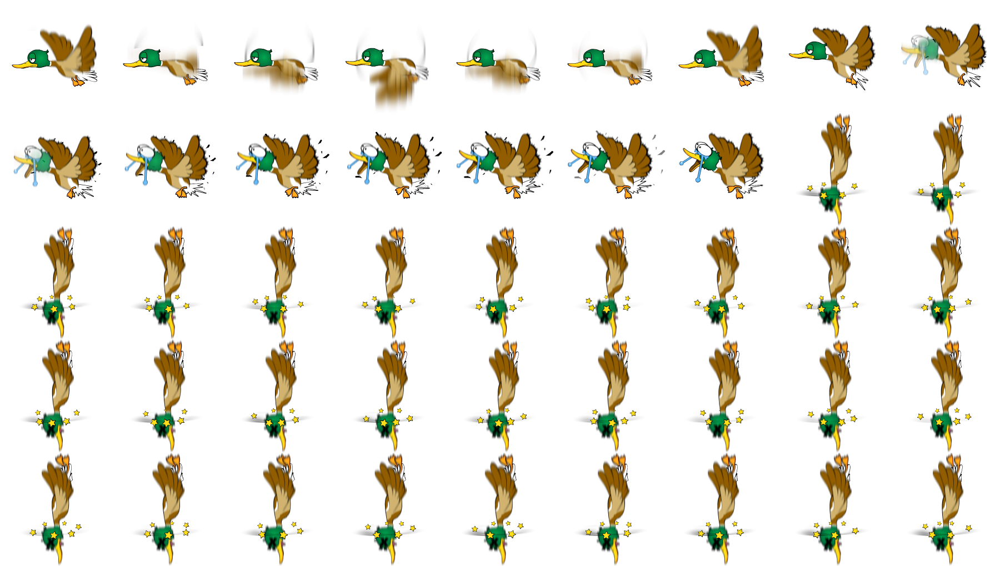

“Duck Shooter” Documentation by “Code This Lab S.r.l.” v1.0
“Duck Shooter”
Created: 05/01/2015
By: Code This Lab S.r.l.
Email: info@codethislab.com
Thank you for purchasing our game. If you have any questions that are beyond the scope of this help file, please feel free to email via user page contact form here. Thanks so much!
Table of Contents
- Description
- Folder Content
- Getting Started
- HTML Structure
- CSS Files and Structure
- JavaScript
- Change Ducks
- Change Graphic
- Disable Sounds
- Wordpress Plugin
A) Description - top
Duck Shooter is an Arcade HTML5 Game. Move the scope and shot the ducks before they fly away from the screen!
Use Arrows Keys on Desktop or GUI buttons if you are playing on mobile devices.
The ZIP package contains the game with 1500x768 resolution that scales to fit the whole screen device
Just warning that for very wide screens, the game may not be perfectly full screen.
The game is fully compatible with all most common mobile devices.
Sounds are enabled for mobile but we can't grant full audio compatibility on all mobile devices due to some well-know issue between some mobile-browser and HTML5.
So if you want to avoid sound loading, please read Disable Sound section).
WARNING: Sounds can't be enabled for Windows Phone as this kind of device have unsolved issues with 'audio' and 'video' tag.
B) Folder Content - top
- ctl_arcade_wp_plugin: This folder contains the zip package that can be used with our Wordpress plugin "CTL Arcade" (http://codecanyon.net/item/ctl-arcade-wordpress-plugin/13856421).
- game This folder contains the full game source code ready to be edited.
- live_demo This folder contains the obfuscated code. You should upload this folder on your server if you don't need to make any changes.
- readme This folder contains the package instructions.
- thumbs This folder contains all game icons.
C) Getting Started - top
To install the game just upload on your server the game folder game1024x768.
WARNING: The game won't run locally with some browser like Chrome due to some security restrictions.
- Game Resize: All game resolution automatically center itself and fits proportionally on the screen thanks to the ctl_utils.js file. If you want to avoid this, comment this function:
$(window).ready(function() {
/*if(isIOS()){
setTimeout(function(){sizeHandler();},200);
}else{
sizeHandler();
}*/
});
$(document).ready(function(){
var oMain = new CMain();
$(oMain).on("save_score", function(evt,iScore) {
//alert("iScore "+iScore );
});
});
TEXT_GAMEOVER = "GAME OVER"; TEXT_SCORE = "SCORE"; TEXT_HELP1 = "USE ARROW BUTTONS OR KEYS TO MOVE THE SCOPE"; TEXT_HELP2 = "CLICK SPACEBAR TO SHOOT"; TEXT_HELP3 = "YOU HAVE 3 BULLETS TO HIT THE DUCKS, DON'T LET THEM FLY AWAY OR YOU WILL LOSE A LIFE"; TEXT_HELP_MOB1 = "TOUCH THE LEFT SIDE OF THE SCREEN TO MOVE THE SCOPE"; TEXT_HELP_MOB2 = "TOUCH THE RIGHT SIDE OF THE SCREEN TO SHOOT"; TEXT_HIT = "HIT"; TEXT_BONUS = "BONUS"; TEXT_SCORE = "SCORE"; TEXT_NOAMMO = "NO AMMO"; TEXT_CREDITS_DEVELOPED = "DEVELOPED BY"; TEXT_SHARE_IMAGE = "200x200.jpg"; TEXT_SHARE_TITLE = "Congratulations!"; TEXT_SHARE_MSG1 = "You collected "; TEXT_SHARE_MSG2 = " points!
Share your score with your friends!"; TEXT_SHARE_SHARE1 = "My score is "; TEXT_SHARE_SHARE2 = " points! Can you do better?";
var oMain = new CMain({
scope_accelleration:2, //SCOPE ACCELLERATION
scope_friction:0.85, //SCOPE FRICTION
max_scope_speed:40, //MAXIMUM SCOPE SPEED
num_bullets:3, //NUMBER OF PLAYER BULLETS FOR EACH SHOT LEVEL
hit_score: 100, //POINTS GAINED WHEN DUCK IS HITTEN
bonus_time:4000, //BONUS TIME IN MILLISECONDS
lives:5, //NUMBER OF PLAYER LIVES
duck_increase_speed: 0.5, //INCREASE THIS VALUE TO SPEED UP DUCKS AFTER EACH LEVEL SHOT
duck_occurence: [ 1, //NUMBER OF DUCKS IN SHOT 1
1, //NUMBER OF DUCKS IN SHOT 2
2, //NUMBER OF DUCKS IN SHOT 3
1, //NUMBER OF DUCKS IN SHOT 4
1, //NUMBER OF DUCKS IN SHOT 5
1, //NUMBER OF DUCKS IN SHOT 6
2, //NUMBER OF DUCKS IN SHOT 7
2, //NUMBER OF DUCKS IN SHOT 8
2, //NUMBER OF DUCKS IN SHOT 9
3 //NUMBER OF DUCKS IN SHOT 10
//ADD NEW DUCK OCCURENCE HERE IF YOU NEED...
],
fullscreen:true, //SET THIS TO FALSE IF YOU DON'T WANT TO SHOW FULLSCREEN BUTTON
check_orientation:true //SET TO FALSE IF YOU DON'T WANT TO SHOW ORIENTATION ALERT ON MOBILE DEVICES
});
D) HTML Structure - top
This game have the canvas tag in the body. The ready event into the body calls the main function of the game: CMain().
The head section declares all the javascript functions of the game. The whole project uses a typical object-oriented approach.
In the init function there are 8 mapped events that can be useful eventually for stats
E) CSS Files and Structure - top
The game use two CSS files. The first one is a generic reset file. Many browser interpret the default behavior of html elements differently. By using a general reset CSS file, we can work round this. Keep in mind, that these values might be overridden somewhere else in the file.
The second file contains all of the specific stylings for the canvas and some hack to be fully compatible with all most popular mobile devices
F) JavaScript - top
This game contains:
- jQuery
- Our custom scripts
- CreateJs plugin
- Howler Sound library
- jQuery is a Javascript library that greatly reduces the amount of code that you must write.
- The game have the following js files:
- CMain: the main class called by the index file.
This file controls the sprite_lib.js file that manages the sprite loading, the loop game and initialize the canvas with the CreateJs library - ctl_utils: this file manages the canvas resize and its centering
- sprite_lib: this class loads all images declared in the main class
- settings: general game settings
- CLang: global string variables for language localization
- CPreloader: simple preloader that shows resources loading progress
- CMenu: simple menu with a play button
- CGfxButton: this class create a standard button
- CTextButton: this class create a standard text button
- CToggleButton: this class create a toggle button
- CGame: this class manages the game logic
- CInterface: this class controls the game GUI that contains text and buttons
- CEndPanel: this class manages the game over panel that is shown when player loses all the lives
- CHelpPanel: this class shows the help panel before starting the game
- CDuck: this class manages the duck object
- CScope: this class manages the scope object
- CScoreText: this class manages the score text that appears when a duck is hit
- CMain: the main class called by the index file.
- CreateJs is a suite of modular libraries and tools which work together to enable rich interactive content on open web technologies via HTML5.
- Howler is a javascript Audio library.
Resuming, the complete game flow is the following:
- The index.html file calls the CMain.js file after ready event is called
- The main class calls CPreloader.js to init preloader text and start resources loading
- When all resources contained in "/sprites" folder and "/sounds" folder are loaded, the main class removes the preloader and calls the CMenu.js file that shows the main menu
- If user click on the play button in main menu, the CGame.js class is called and the Help Panel is shown.
- When user skip the Help Panel, the game finally starts
- If the player loses all the lives, the game over panel is shown. If the player click the exit button in the up-right corner, the menu panel is shown.
G) Change Ducks - top
The game contains the ducks spritesheets that you must edit if you want to change duck images.
All info about spritesheets can be edited in CDuck.js.
- duck_1.png: Each duck is composed by 3 animations: Fly, Hit and Fall.

H) Change Graphic - top
You can easily change all the game graphic, replacing all the file you need in the "/sprites" folder. Just respect file format (.png or .jpg) and size if you don't want to change any code line.
I) Disable Sounds - top
If you want to disable all the sounds for mobile devices, you have to change the following value in settings.js file:
var DISABLE_SOUND_MOBILE = true;
J) Wordpress Plugin - top
CTL Arcade will allow you to add a real arcade on your worpress website, in this way your users will be more involved and will stay connected longer.
It's possible to add Ads banner at the beginning of each game and at the end of each level. This will give you a new tool to increase your revenues.
Your own users will promote your website sharing their scores on the main Social Networks, with no extra costs for you.
You'll get by default the score-sharing on Twitter. To add Facebook just follow the guideline below.
3 widgets can be added in your pages through a shortcode.
- Game iframe
- Rate the Game
- Leaderboard
- PHP 4.3
- WordPress 4.3.1
- HTML5
- Canvas
- Javascript / jQuery
You can find it here!

Once again, thank you so much for purchasing this game. Fell free to contact us if you have any questions or issue relating to this game. No guarantees, but we'll do our best to assist.